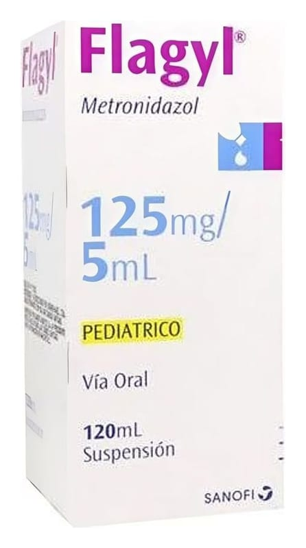

Flagyl 125 mg/5 ml Oral Süspansiyon, 120 ml

Ne için kullanılır
KT · Bölüm 1FLAGYL, metronidazol adı verilen bir ilaç içerir. 5-nitroimidazol grubuna ait bir ilaçtır. Bu ilaç, FLAGYL'e duyarlı mikroorganizmaların (bakteri veya parazitler) neden olduğu belirli enfeksiyonları tedavi etmek için kullanılır.
FLAGYL 120 mL’lik şişelerde, 5 mL’lik ölçek ile piyasaya sunulmaktadır.